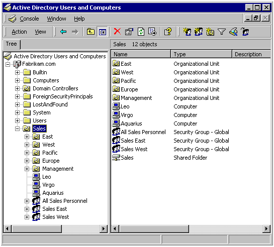
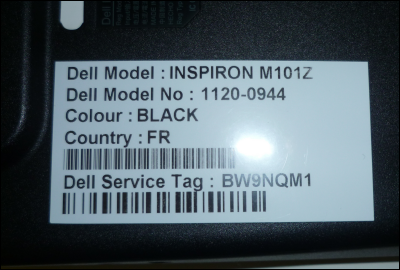

1er année de stage:
Ce stage c’est déroulé au technopôle de Bouygues Télécom, ci-joint mon rapport de stage.
Les technologie utilisées :
-GRI ( Gestion de ticket)
-Active Directory : 
Situations :
Mise en place d'une tablette signature :
Préparation de poste :
Gestion des stocks : 